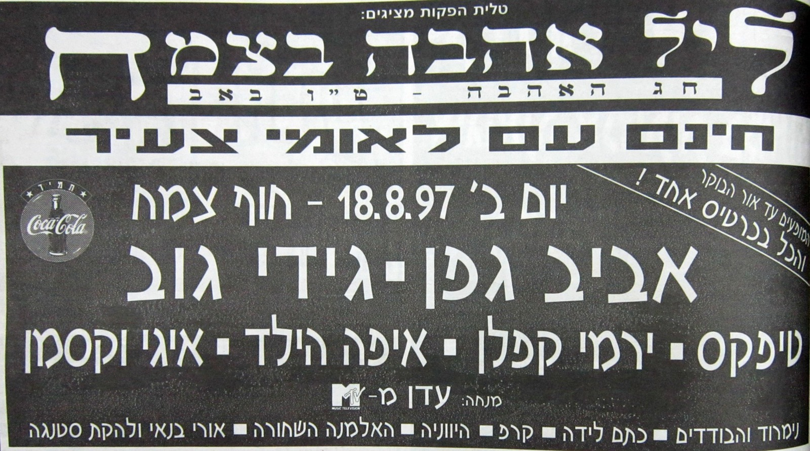
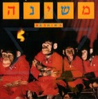
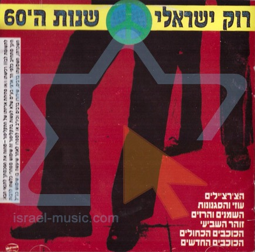

בית רוק מוסיקה רוק כל מה שרציתם לדעת מוסיקת רוק, היא קיצור למונח "מוסיקה פופולארית", המוסיקה פונה לכל הגילאים ולכל רבדי האוכלוסייה ובשנים האחרונות המוסיקה הישראלית משלבת רבות את סגנון הפופ באלבומיה. שנות ה 2000 שנות ה 90 שנות ה 80 שנות ה 70 שנות ה 60   